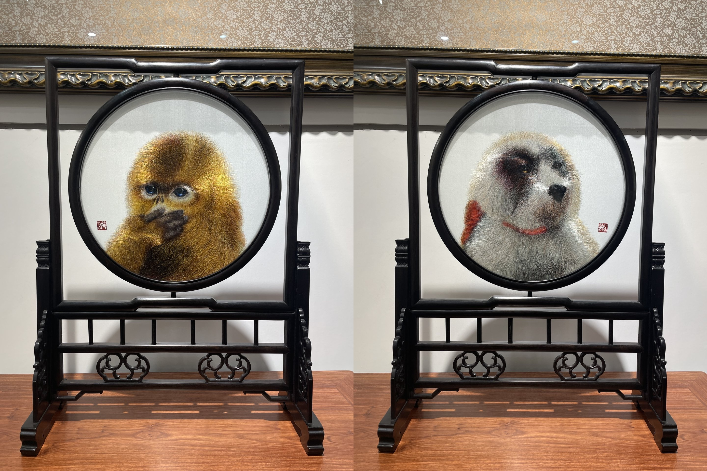
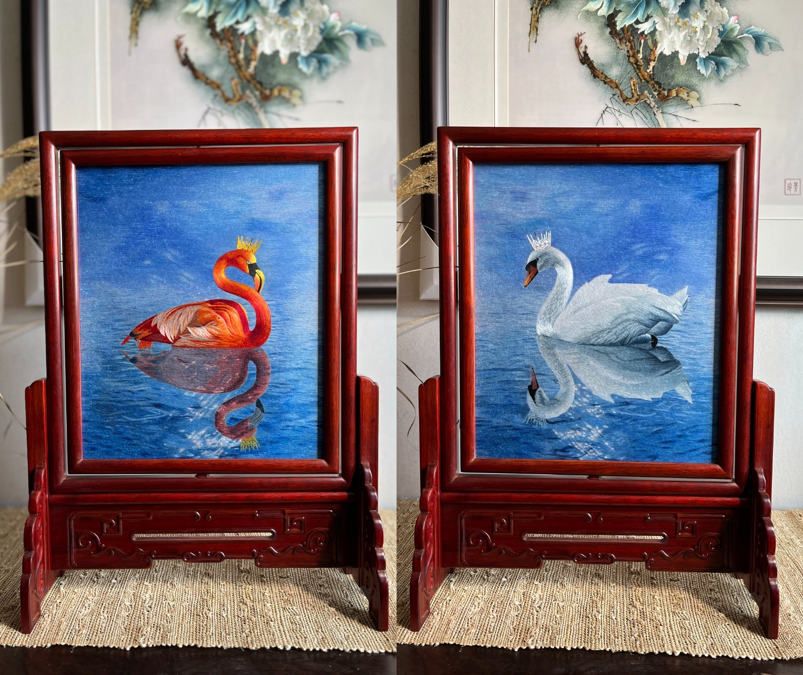
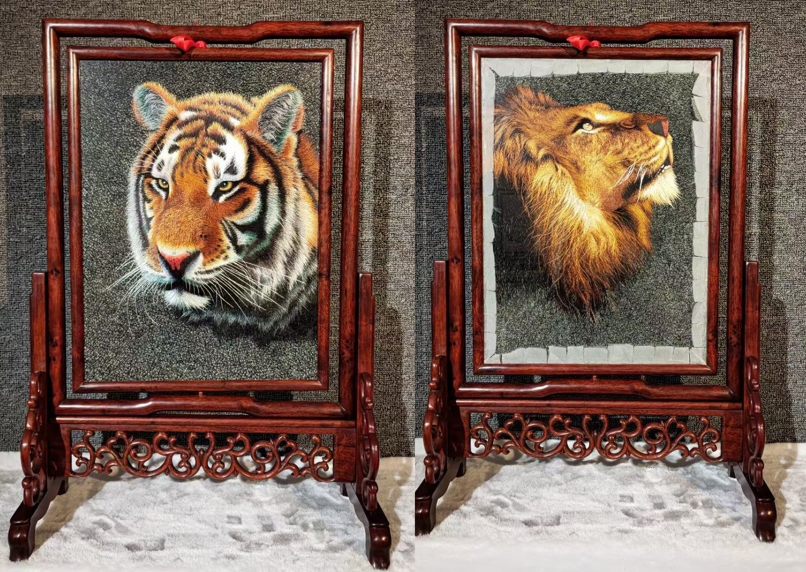
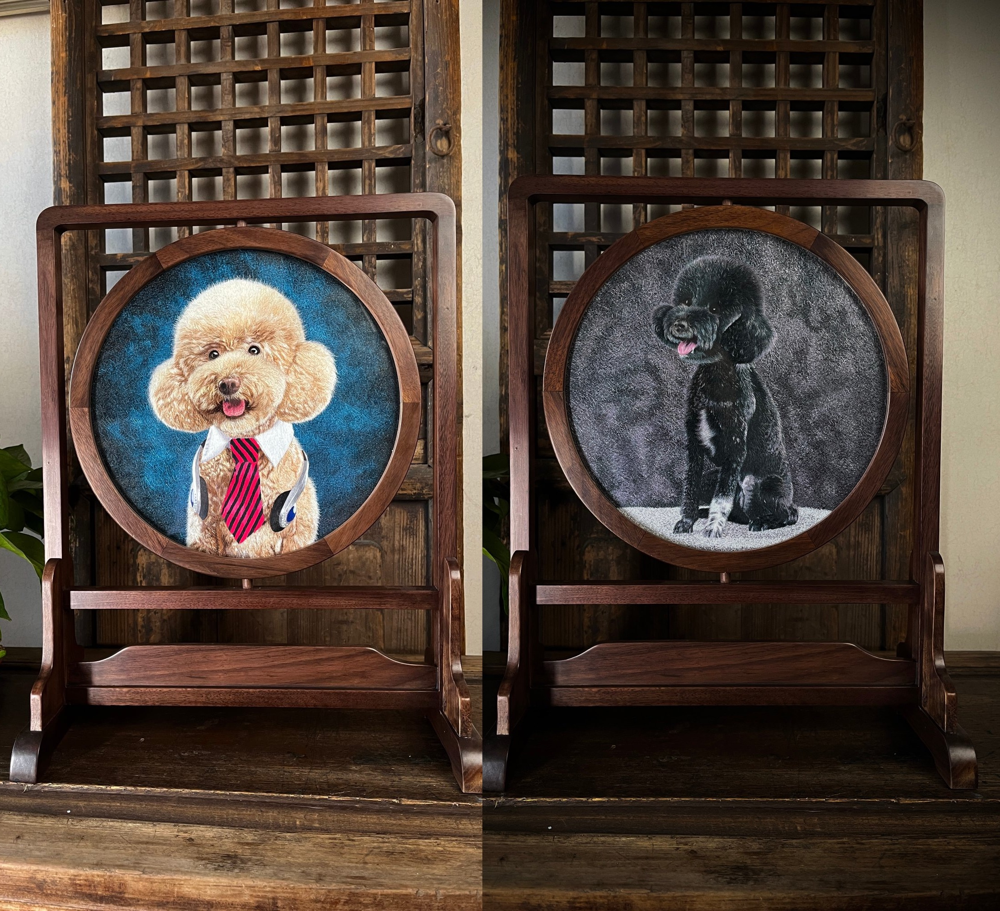

异形
普通双面绣两面图案一致，而三异绣要求正反面呈现不同图案，观者转身观看时得到的是另一幅完整作品。
杨雪刺绣艺术工作室深耕苏绣高阶技艺，以匠心解构双面三异绣技法内核，复刻传统非遗巧思，赋予古老绣品全新当代审美表达。

双面绣本已是苏绣里极具观赏价值的经典品类，而双面三异绣，是双面刺绣体系中难度天花板级别的存在。
杨雪老师携工作室一众资深绣娘，多年深耕特种双面绣研发与实操创作，跳出常规双面“同形异色”的基础绣法局限，完整掌握双面异形、异色、异针法的全套制作工艺。
我们以手工丝线为媒介，在同一块底料之上，正反面呈现完全不一样的画面纹样、色彩体系与刺绣肌理，让一方绣品承载两份独立艺术图景，把苏绣“细、密、匀、活、亮”的极致特质发挥到极致。

双面三异绣，顾名思义三大核心差异：异形、异色、异针法。三者同时满足，才是标准的双面三异绣作品。
普通双面绣两面图案一致，而三异绣要求正反面呈现不同图案，观者转身观看时得到的是另一幅完整作品。
同一底料之上，正反面拥有不同的配色体系，浅色不透底、深色不晕染，色彩层次需要提前推演。
正反两面可能对应完全不同的针法逻辑，绣娘需要同时控制两套走线秩序，让两面肌理互不干扰。
一根丝线穿透底料，正面走线塑造 A 图案，背面走线同步排布 B 图案，不能打结、不能跳线、不能出现线头堆积。


分毫偏差就会让两面纹样同时受损，对绣工的稳定度、节奏和经验要求严苛。
正面可能使用平针、打籽针、虚实针，背面则需要缠针、盘金、施针等不同针法，左右手都要记住各自的针法逻辑。
正反面丝线叠加排布，多层丝线堆叠还要保证底料平整不起皱，色彩、厚度和透底风险都要在落针前预判。
杨雪刺绣团队的三异绣实践，不只停留在传统技法展示，也让小众高阶工艺进入当代生活场景。
作为专注苏绣创新创作的手工艺团队，杨雪老师依托多年一线刺绣实操经验，带领工作室绣师拆解、梳理、标准化了双面三异绣的整套制作流程。
过往传统三异绣多留存于馆藏文物、大型参展摆件，形制厚重、受众门槛高；杨雪团队在严守古法工艺标准的前提下，将双面三异绣融入挂画、屏风、旗袍配饰、艺术摆件等生活化载体。
从原稿设计、分面绘图、丝线配色筛选，到上绷刺绣、后期装裱养护，工作室实行全流程自研自制，让双面三异绣被更多刺绣爱好者看见、收藏、喜爱。
一块底料，两幅画卷，一针一线皆是经年匠心。双面三异绣适合艺术收藏、空间陈设与高端国风礼品等场景。
稀缺的特种苏绣工艺，每一件双面三异绣均为纯手工创作，具备观赏价值与非遗收藏价值。
完整的异形、异色、异针技法，是苏绣高阶技艺的直观载体，具备技艺研究和非遗展示属性。
工作室定制款三异绣作品可用于居家装饰挂画、茶室屏风、艺术摆件和高端商务国风伴手礼。
一针双面双景致，十指三异三匠心。
杨雪刺绣 | 双面三异绣定制 · 苏绣作品创作 · 刺绣技艺交流